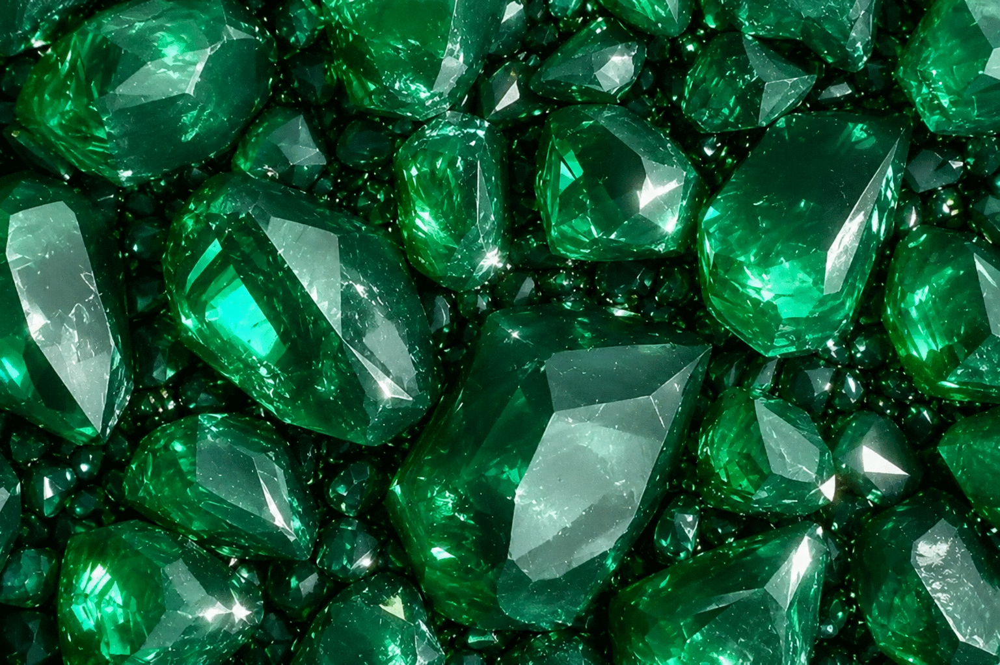

Часть первая
Спустя несколько дней после появления нежданной гостьи, под стеклянным куполом конференц-зала
Элайи было созвано самое
масштабное собрание Высшего Совета за последние годы.
В зале присутствовали ведущие учёные во главе с доктором Эммидом Бауном, руководители
энергетической промышленности,
транспортной системы, космической разведки. По галосвязи к ним присоединились Сержен Харинек и
Владек Курен вместе с
ключевыми координаторами своих планет — каждый отвечал за свою сферу, но все понимали: решение
будет общим.
Конференция длилась два полных дня — два дня , насыщеные вопросами , данными , последовательными
выводами и здравыми
дискуссиями. Главным вопросом на повестке стояло совместное, максимально плотное изучение
шлейфа, оставленного кометой.
Помимо всестороннего анализа во всех спектральных диапазонах, визуального и радиосканирования, в
глубь хвоста было
отправлено несколько десятков разведывательных скаутов. Эти компактные, высокомобильные аппараты
были оснащены полным
набором сенсоров: масс-спектрометры, гамма- и рентгеновские детекторы, лазерные анализаторы
состава, гравиметры,
магнитометры, камеры сверхвысокого разрешения. Они ныряли в шлейф, ловили частицы пыли,
анализировали обломки,
фиксировали газовые облака, искали любые следы редких металлов, экзотических соединений,
неизвестных изотопов — всего,
что могло оказаться полезным для Альянса.
Параллельно готовились транспортные силы: все свободные танкеры, грузовые корабли, даже
небольшие рудовозы и катера —
всё, что способно взять на борт руду, газовые смеси или любые другие ценные материалы. Их трюмы
уже были частично
переоборудованы под вакуумную транспортировку и криогенное хранение.
Были приведены в полную готовность мобильные автоматические бурильные установки — разных типов и
калибров, рассчитанные
на любые условия: от хрупкого льда до сверхтвёрдых металлических включений.
Рядом с ними ждали тяжёлые промышленные роботы и дроиды-прорабы — автономные координаторы,
способные в реальном времени
управлять целыми бригадами техники в условиях экстремального холода, радиации и микрогравитации.
Они уже прошли
финальное тестирование и были готовы взять на себя всю грязную, опасную и точную работу.
В глубь шлейфа первыми ушли разведывательные скауты — они определяли плотность среды, уровень
радиации, температурные
градиенты, магнитные поля, химический состав. Данные поступали в режиме реального времени, и с
каждым новым пакетом в
у всех нарастало предвкушение.
Никто из присутствующих не сомневался: полезные ископаемые будут найдены.
Комета пронеслась , возможно, через всю галактику — через миллионы лет, через тысячи разрушенных
систем, через звёздные
колыбели и мёртвые миры. Она могла принести с собой то, чего человечество ещё не видело —
осколки чужих цивилизаций,
редчайшие элементы, соединения, которые могли перевернуть энергетику, медицину,
материаловедение… или просто стать новой
страницей в истории Альянса.
Работа началась — кропотливая, увлекательная, полная ожидания новых открытий.
В научных центрах трёх планет горел свет круглосуточно.
В лабораториях рождались гипотезы.
В ангарах готовились корабли.
А в глубине космоса, в миллионах километров от ближайшей границы, шлейф кометы мерцал россыпью
частиц — холодный,
манящий, полный тайн...
Часть вторая
На планете" Лиара " стоял самый разгар настоящей зимы.
Снег хрустел под ногами, ослепительно отражая солнечные лучи — белоснежный покров сверкал
тысячами
крошечных искр,
словно кто-то рассыпал по склонам миллионы алмазов. Лёгкий ветер поднимал снежинки в воздух,
закручивал их в короткие
танцующие вихри и тут же опускал обратно, оставляя за собой серебристую дымку. Горные вершины
вдалеке утопали в толстых
белых шапках, а свежий морозный воздух щипал щёки и вырывался изо рта облачками пара,
растворяясь в
ясном голубом
небе.
Владек Курен пригласил обе семьи к себе в гости, чтобы немного отвлечься от напряжённой суеты
последних недель,
связанной с разведкой и началом добычи различных полезных ископаемых из хвоста кометы. Работа
кипела
и набирала обороты:
скауты и тяжёлые роботы уже вывозили первые партии руды и редких газов, лаборатории работали
круглосуточно, а
аналитические центры трёх планет обменивались данными в реальном времени. Всё было налажено,
процессы отлажены — теперь
главы могли позволить себе короткую передышку.
Колла, жена Владека, заботливо расставляла посуду на небольшом столе из натурального дерева
породы
Поэло — массивы
которого произрастали на южном склоне гор, видневшихся на горизонте. Несмотря на лёгкий морозец,
все
решили плотно
одеться и пообедать на свежем воздухе под лучами яркого тёплого зимнего солнца. К тому же
дополнительно всех согреть
обещал Владек, вынося на всеобщее обозрение новый сорт горячего грога из ягод, которые
произрастали
только на его
планете — они любили холод и дозревали под густыми шапками снега прямо на кустах.
Соэлла поднесла Колле очередную партию блюд.
— А почему это наши мужчины не помогают нам накрывать на стол?
— Не стоит их допускать к такому ответственному и деликатному делу, — улыбнулась Колла,
поправляя
треугольники салфеток,
выглядывающие своими острыми кончиками из стеклянной подставки. — А то просто сложат вилки и
ложки
на один поднос,
возьмут чашки с вином и будут один за другим брать кусочки Пекуйи из общего блюдца. Их это
вполне
устроит :)).
Она хохотнула, ставя хрустальную чашу с Пекуйей в центр стола.
— Мужские руки не годятся для вилок и ложек, — Элли Харинек с морозным румянцем на щеках
поднесла
широкое блюдо с
угощением со своей планеты. Это были маленькие розовые моллюски, обитающие в тенистых озёрах
планеты
Корса. Их слегка
терпкий кисло-сладкий вкус прекрасно сочетался с любым лёгким десертным напитком.
С Элайи принесли тонкие ломтики копчёного мяса морской акулы — нежного, с лёгким ароматом
морской
соли и сьедобных
водорослей, растущих на морских отмелях.
С Лиарры — горячие булочки с начинкой из ягод Кешьи, которые таяли во рту, оставляя послевкусие
зимнего леса и мёда.
С Корсы — упругие кубики из хрустящей мякоти корнеплодов, поджареные снаружи и истекающие пряным
соком внутри.
Трое женщин грамотно и заботливо сервировали стол: Колла аккуратно расставляла бокалы, чтобы
свет
солнца играл в
хрустале, Соэлла поправляла салфетки и зимние цветы в низкой вазе, Элли выкладывала блюда так,
чтобы
всё выглядело
гармонично и аппетитно — каждая деталь была на своём месте, как в маленьком ритуале уюта и тепла
посреди зимы.
Мужчины в это время стояли на краю террасы, весело шутили, глядя на заснеженные склоны ближайших
гор, где уже второй
день подряд от государственных забот отвлекались их давно повзрослевшие дети.
Молодёжи было немного скучновато в компании взрослых — они предпочитали отдыхать в кругу своих
ровесников, кататься на
лыжах, устраивать соревнования и штурмовать трассы.
Время от времени на коммуникаторы родителей приходили короткие сообщения:
«Поздравьте, мне покорился второй Южный лыжный спуск!»
«Мы всей компанией уже час штурмуем без подъёмника по колено в снегу трассу Шейли…
Присоединяйтесь,
лентяи!!!»
Иногда добавляли лёгкие шутливые подколы: «Пап, ты там опять за столом сидишь? Мы тут живём
настоящей жизнью!» или
«Мамы, не скучайте без нас, мы скоро вернёмся с зимними трофеями — фотки уже летят!»
— Прошу всех к столу, — на правах хозяйки торжественно, но тепло прозвенел голос Коллы.
Казалось, именно этой «команды» все негласно и ждали. Потирая руки от предвкушения вкусной
трапезы,
мужчины мигновенно
очутились за столом в уютных тёплых креслах-лежанках, специально вынесенных на террасу и
застеленных
мягкими шерстяными
пледами.
— Ну-с, приступим, — деловито произнёс Сержен, поднимая в руках узкий графин с гранатовой
тягучей
жидкостью.
— Нууу… кто чего ждал, а ты так в первую очередь именно этого, — с задором подколол Легард
Сержена.
— Я ждал именно широко отрекламированного грога, — вопросительным тоном произнёс Сержен, подняв
палец свободной руки
вверх. — Необходимо дополнительно согреть организм, так сказать.
— Ха-ха, это совсем не он! Горячий грог будет уместен вечером у костра перед сном, — расплылся в
улыбке Владек. —
Дегустация намечена на вечер — именно это время соответствует нашему новому гастрономическому
открытию.
— Окей, тогда я хочу отведать именно эту тягучую субстанцию, — с улыбкой никак не унимался
Сержен.
— Ну тогда всем по чуть-чуть, снимем пробу Этого напитка, — Легард оживлённо быстро пособирал
маленькие
ирридовые стопочки,
привезённые в подарок Владеку.
Застолье прошло легко и весело.
Смех перекатывался над столом, когда кто-то рассказывал забавную историю с работы или подшучивал
над
привычками другого.
Пекуйя таяла во рту, розовые моллюски оставляли лёгкую кислинку, булочки с ягодами Кешьи пахли
зимним лесом, а тягучее
вино из погребов Корсы добавляло разговору тёплую глубину.
Время текло незаметно — под ярким солнцем, среди хруста снега и отголоска эха смеха из
ближайшего
горного склона, среди
друзей, которые давно стали семьёй и конечно же партнёрами.
Подходил к концу очередной день.
При ярком свете восходящей Луны, медленно поднимающейся из-за гор, все семьи в полном составе
собрались в
небольшом открытом дворике на
тёплый ужин. Наконец-то наступил момент долгожданной дегустации.
Дроид-помощник вынес грог!
Большой глиняный кувшин с широким горлышком мягко дымился — из него лениво, ароматно сочился пар
горячего напитка,
несущий запах ягод, корицы, мёда и чего-то неуловимо зимнего, лесного.
Водрузив кувшин на середину небольшого столика, вокруг которого уже с нетерпением кучковались
все ожидающие, дроид с
деловитым видом поднял половник и произнёс мягким синтетическим голосом, в котором неожиданно
проскользнула нотка
интриги:
— Кому первому предоставлена честь опробовать новый напиток?
— Ну конечно же мне! — не дожидаясь какого-либо ответа, выкрикнул Сержен и мягко отобрал
половник из руки дроида. Тот
услужливо как бы подмигнул оптикой и быстро, почти бесшумно скользнул в дверной проём, оставив
после себя лишь лёгкий
шлейф тёплого воздуха.
— Ну-с, не вижу ваши чашки!
Все разом подняли пока ещё пустые чашки, как бы салютуя ими в сторону Сержена. Тот уже бережно
зачерпывал первую порцию
ароматного голубоватого напитка — густого, чуть светящегося в лунном свете, с тонкими завитками
пара, поднимающимися
вверх, словно маленькие призрачные спирали.
— Думаю, никто не будет считать меня эгоистичным, если первую порцию я налью именно себе?
— Конечно же! — хором протянули «дегустаторы», и заливной смех рассыпался по всему двору —
тёплый, искренний, такой,
какой бывает только среди людей, которые давно знают друг друга и могут не стесняться ни шуток,
ни слабостей.
Сержен аккуратно налил себе полную чашку, поднёс к лицу, глубоко вдохнул — и глаза его
загорелись детским восторгом.
— Ох… Это даже лучше, чем я представлял, — пробормотал он, делая первый осторожный глоток. —
Горячо… сладко… с лёгкой
горчинкой… Владек, ты гений.
Остальные тоже потянулись к кувшину.
Чашки наполнялись одна за другой. Пар поднимался вверх, смешиваясь с морозным воздухом и
превращая дыхание в маленькие
облачка.
Колла сделала первый глоток и закрыла глаза от удовольствия.
— Как будто пьёшь само лето, запечатанное в янтаре… — тихо сказала она.
Соэлла, улыбаясь, поднесла чашку к губам и кивнула мужу:
— Лег, признавайся — ты уже пробовал тайком?
— Я? Никогда, — он поднял руки в притворном возмущении. — Я ждал именно этого момента. Честное
слово.
Смех снова прокатился по дворику.
Сержен, почмокивая допив первую порцию, потянулся за второй:
— Ещё одну, пока не остыл! Это не напиток — это лекарство от всех забот галактики.
Владек, довольный, наблюдал за всеми и тихо добавил:
— Вот ради таких вечеров и стоит всё это затевать…
Откинувшись в своих креслах ,все , слегка посёрбывая , делали небольшие глотки , обнимая тёплые
чашки заедая тёплый
напиток ароматными фруктами и хрустящими кусочками слегка сладкого шоколада.
- Какой ,ты говоришь, обьём этого напитка может выпускать твой комбинат - с нарочито деловым
тоном но с ноткой
неподдельного юмора повернулся к Владеку Сержен.
Ответная реакция не заставила себя ждать.
- Аааааа ха-х ха-х !!! Этот эксклюзив не продаётся - Владек почуяв уже деловую нотку вечного
комерсанта ,по доброму
громко рассмеялся и откинулся на спинку - только для домашнего пользования - причмокнул.
- Да ладно ... возмутился Сержен , понимая что может упустить новый напиток , как ценитель всего
хмельного - а такое
слово как "угостить" тебе известно ? - ещё надеялся на определённую "сделку" Сержен.
- Ну конечно же всем вам иногда будут ограниченые поставки для личного пользования - нарочито
бизнес тоном твёрдо
произнёс Владек .
И дружный хохот снова рассыпался по всему двору.
- Что скажешь ? - повернулся к Легарду.
- Ну я как НЕ ценитель хмельных напитков , уверенно заявляю - НЕ ДУРНО ! и хмельная улыбка
растеклась по всегда
серьёзному лицу Командора .
Всем всё понятно было и без слов !!!...
Луна поднималась выше, снег вокруг искрился серебром, а горячий грог медленно растекался по телу
теплом, смешиваясь с
ощущением дома, друзей и редкого, почти забытого покоя.
Тихо хрустя снегом рядом с Владеком предстал дроид-распорядитель.
- Сэр, Вас вызывает профессор Пол Сэменс из нашей обсерватории. Говорит есть интересные новости
в
рамках программы "Поиск".
Он услуждиво указал рукой в сторону здания.
- Друзья , я отлучусь на несколько минут. Похоже учёные нам что-то накопали интересного.
Легард кивнул.
- Держи нас в курсе ...
*
Он вернулся менее чем через 10 минут. Вид у него был хоть и озадаченный, но спокойный.
— Что-то случилось? — Колла с тревогой встала с кресла-лежанки и поставила чашку на стол.
— Нет-нет, — поспешно подняв ладонь уверенным тоном, успокоил всех Владек.
Все слегка напряглись…
— Профессор Пол Сэменс сообщил: только что развед-скауты внутри хвоста обнаружили крайне редкий
и дорогой минерал —
«Тибарий». Очень хорошая новость. И похоже, что такие находки будут ещё. Все подробности будут
немного позже, а сейчас
нам кое-что надо оперативно обсудить, — и он кивнул Легарду и Сержену в сторону небольшой
беседки в углу дворика.
Все прекрасно поняли, что на данный момент не стоит задавать лишних вопросов — со временем всех
введут в полный курс
дела.
От этой внезапной новости хмель у всех троих фактически развеялся.
— Есть какие-то подробности? — Легард выжидающе посмотрел на Владека. — Ну же…
— В общем так. Один скаут «увидел» на огромном обломке интересное излучение. Глубокое
сканирование выявило широкий пласт
«Тибария».
Учёные не сомневаются, что это именно он. Сейчас берутся дополнительные пробы, чтобы быть точно
уверенными, но
предварительно — это именно он.
У Сержена аж загорелись глаза.
— Так надо действовать. И немедленно.
Да, в принципе, всех очень быстро стало накрывать волной здравого делового возбуждения.
— Само собой. И прямо сейчас, — Легард, доставая из внутреннего кармана сигару, вернул её
обратно. — Оперативно собираем
совет учёных, глав транспортников и менеджеров по переработке ресурсов. Давай из зала связи
твоего дома, — обратился к
Владеку, — только максимально без лишнего шума и разглашения. Только высшее руководство и
ограниченный круг специалистов
— минимально.
Оба согласно кивнули. Похоже, вечер закончится в делах…
Коротко объяснив ситуацию окружающим, все трое направились в небольшую комнату для
галосвязи.
В течение короткого времени была собрана комиссия из компетентных высших руководителей
нескольких ключевых сфер всех
трёх планет. Была разработана стратегия предварительно на ближайшие дни.
Ключевые задачи — максимальное количество разведывательных и технических ресурсов направить на
поиск, добычу и
транспортировку именно «Тибария».
Задача номер один.
Приоритет.
Хмельные нотки окончательно покинули троих правителей.
Работа. Работа. Работа.
Часть третья: «Зелёный кристалл»
Тибарий— кристаллы глубокого, почти гипнотического зелёного цвета,
будто в них запечатан сам
свет далёких чужими солнц.
Размеры варьируются от скромного сантиметра до редких экземпляров в 10–13 см — больше обнаружены
не были. Каждый
кристалл кажется живым: при определённом освещении внутри него медленно переливаются тонкие,
едва заметные нити света,
словно дыхание.
Его редкость граничит с легендой.
Ещё в Старой Федерации Тибарий был обнаружен всего на двух безжизненных планетах — в разных
секторах, разделённых
тысячами световых лет. Обе находки пришлись на дно гигантских ударных кратеров — следов
столкновений с огромными телами:
астероидами, метеоритами или, возможно, кометами, которые врезались в кору миллионы лет назад.
Учёные тогда
предположили, что кристаллы были занесены именно этими небесными странниками — возможно,
родились в недрах какой-то
далёкой разрушенной звёздной системы и миллионы лет дрейфовали в космосе, пока не врезались в
эти два мёртвых мира.
Поиски продолжались десятилетиями: обшаривали все известные кратеры, бурили, сканировали — но
больше ни одного
месторождения так и не нашли. Тибарий оставался мифом, недосягаемым сокровищем — дороже любого
другого ресурса
галактики.
А ценность его открылась почти случайно.
В одном из секретных институтов Федерации учёные экспериментировали с облучением экзотических
материалов мощными
потоками частиц. Когда очередь дошла до крошечного образца Тибария, произошло нечто
необъяснимое: кристалл ответил. Даже
самый маленький осколок, размером с ноготь, выдал колоссальный всплеск энергии — в десятки раз
превосходящий всё, что
могли дать лучшие ядерные реакторы того времени.
Энергия была чистой, стабильной, почти бесконечной… но с одним жёстким ограничением. Чем больше
кристалл — тем дольше он
«горит». Маленький образец выдавал тот же уровень мощности, что и крупный, но иссякал за недели.
Небольшое количество
крупных экземпляров вместе — могли питать целый город или звёздный корабль несколько
месяцев.
И вот главное чудо: после полного истощения кристалл не разрушался. Достаточно было оставить его
в покое — ровно на
столько же времени, сколько он работал, — и он медленно, но верно восстанавливал свой заряд.
Один к одному. Полная
регенерация. Без потерь. Без отходов. Без радиации.
В мире, где вся энергетика строилась на зелёных источниках — солнечных панелях, ветряках,
гидроэлектростанциях — и на
относительно опасном ядерном топливе для флота и тяжёлой техники, Тибарий стал бы настоящим
прорывом.
При достаточном количестве кристаллов можно было бы полностью отказаться от ядерных реакторов —
перейти на чистую,
безопасную, практически неисчерпаемую энергию. Двигатели звёздных кораблей стали бы в три раза
компактнее и в десятки
раз мощнее. Города — независимыми от погоды и рек. Исследования — свободными от ограничений
энергопотребления.
Но катастрофически мало. Два месторождения на двух мёртвых планетах. Этого едва хватало на
несколько секретных
лабораторий и экспериментальных установок. Тибарий стал самым желанным и самым недосягаемым
ресурсом галактики —
одновременно мечтой учёных, изобретателей, инженеров и кошмаром коммерсантов, монополистов и
тех, кто хотел бы держать
его в одних руках.
И вот теперь — в шлейфе кометы, которая только что прошла через стену астероидов, —
развед-скауты нашли целый пласт
Тибария.
Это означало многое.
Во-первых, комета родилась где-то ближе к центру галактики — в той части, куда никто ещё не
может дотянуться. Она
принесла с собой то, что копилось там миллиарды лет.
Во-вторых, если в хвосте окажется достаточно Тибария — это даст скачок межзвёздным двигателям,
энергетике, науке.
Корабли станут быстрее, дешевле в эксплуатации, мощнее. Исследования выйдут на новый уровень.
Возможно, даже откроются
технологии, о которых раньше только мечтали.
В-третьих… это может изменить баланс. Не только в Альянсе трёх планет, но и во всей известной
галактике.
Поэтому находка была не просто хорошей новостью.
Это был шанс.
Шанс, которого ждали десятилетиями.
И который никто не собирался упускать...
